Welcome to Chapel Of Glory
Social campaign to drive conversation for the digitally remastered colection of Halo stories
Brief
Deliver digital content that will engage audiences, raise awareness and drive purchase intent of the remastered game series.
Challange
Content must be organically shareable with xbox, social media and gaming channels.
Approach
To help drive conversation of the re-mastered Halo franchise, I wanted to rekindle the excitement in the diehard Halo fans and key YouTube influencers. The thought process started at the hours these gamers have played in the Halo world and the game time their hands have seen. If their hands could talk what would they say? Which got me thinking about why these gamers love the Halo universe so much. I wanted to get them to re-live their favourite moments so we could capture the passion in an emotive call to arms for all other gamers around Europe. Off the back of our hero film our veteran stars then challenged all-comers in a competitive Halo multiplayer championship played on location in London and live-streamed online. A video booth at the experiential gave fans the chance to record their own versions of our hero content for social, with the best also featuring on Xbox owned channels.
Results
Over 1.2m video views, Over 9.4k likes and 9.6k retweets, 1.4m facebook reach, earned media coverage; IGN, OXM, XBOX Archives.
 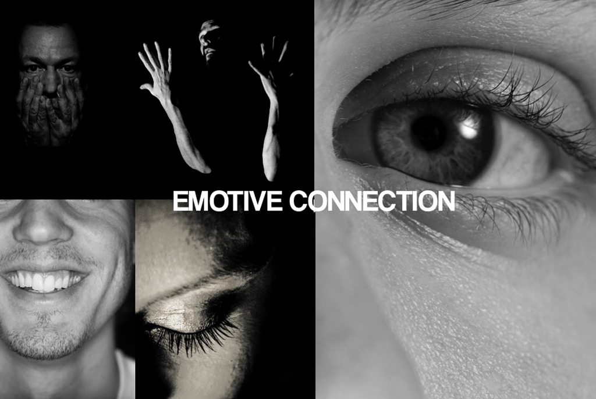
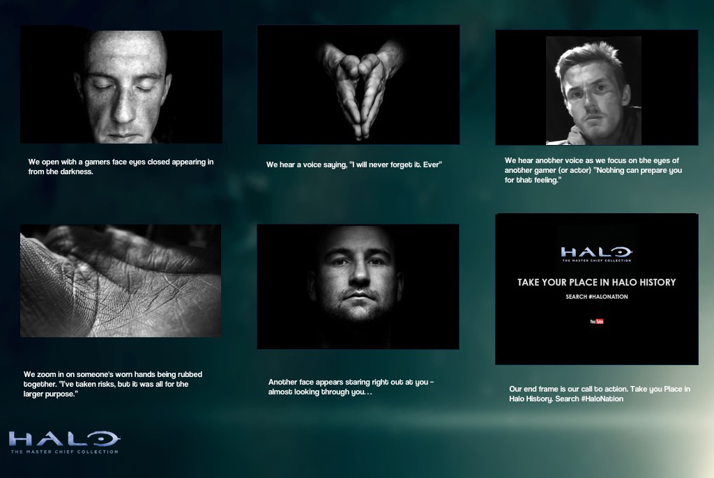
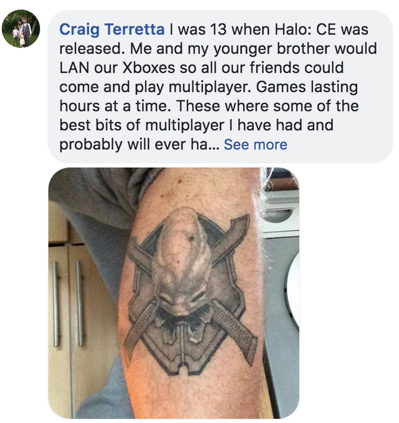
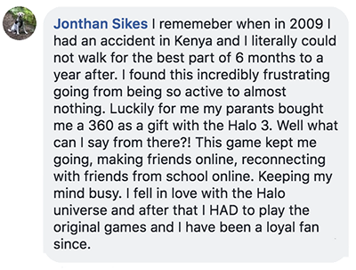
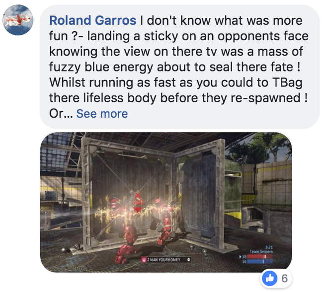
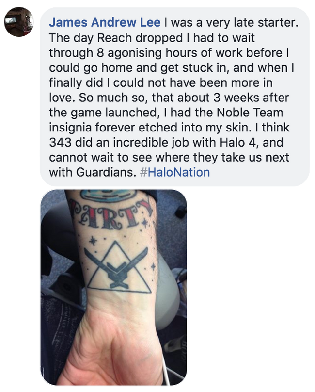
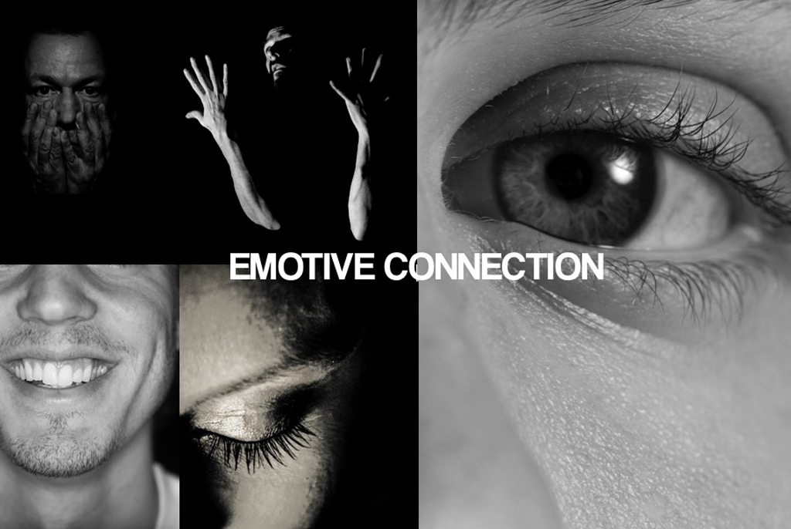
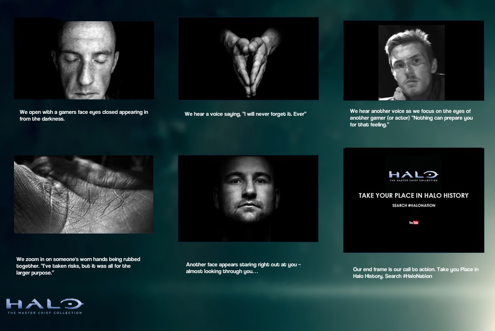
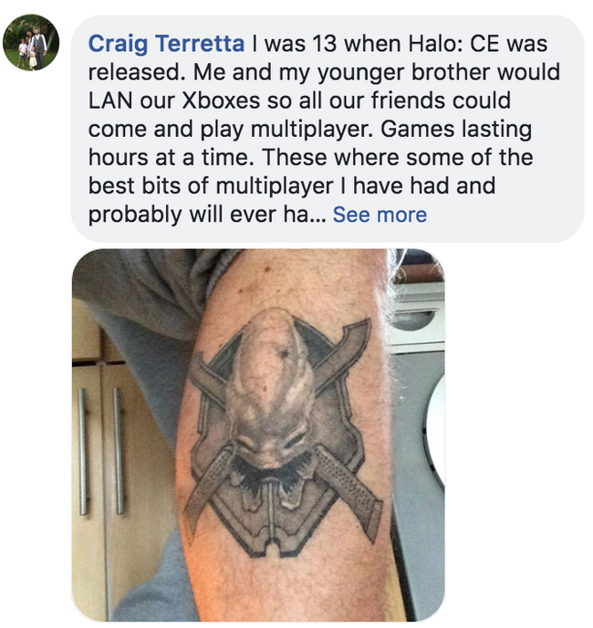
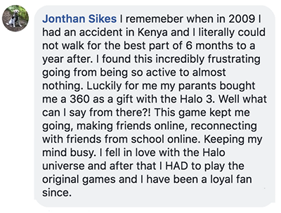
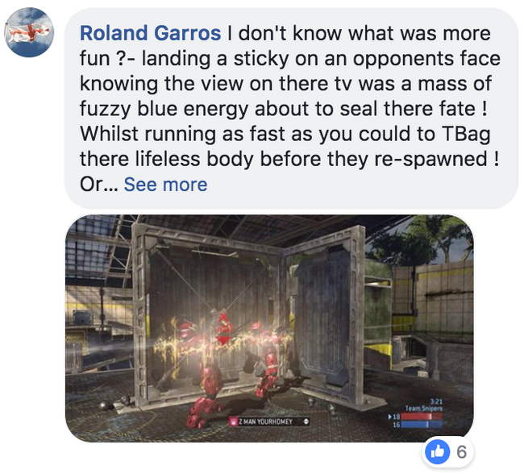
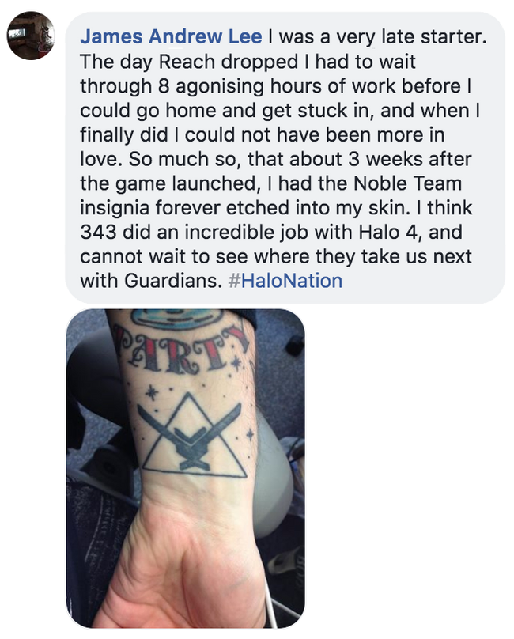
 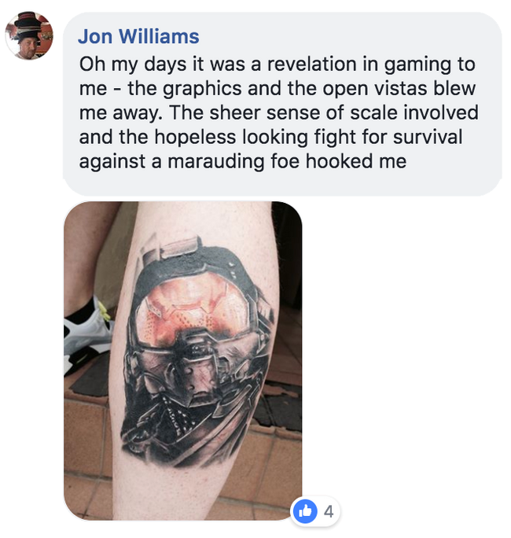
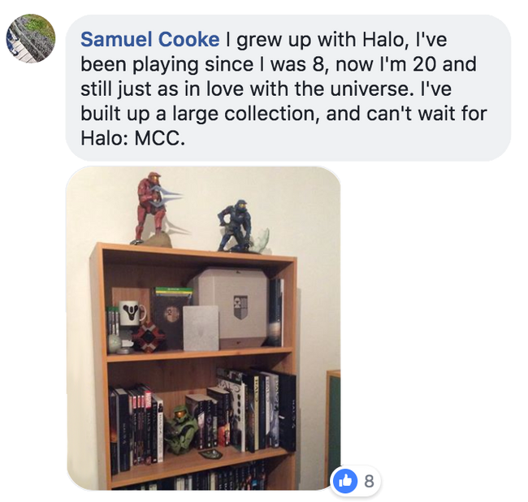
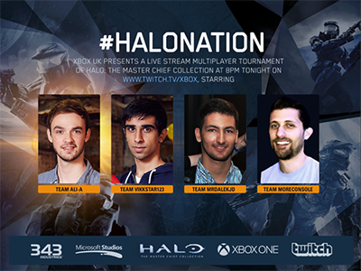
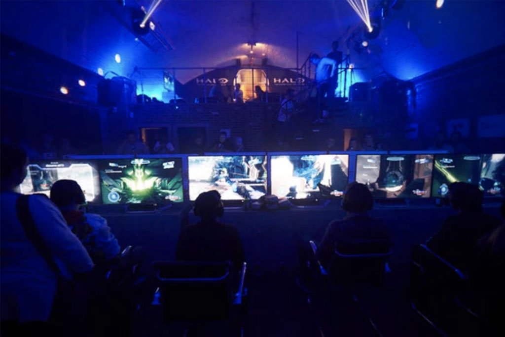
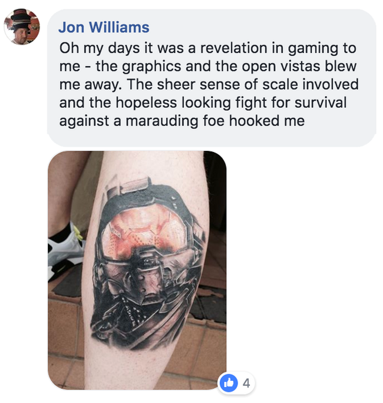
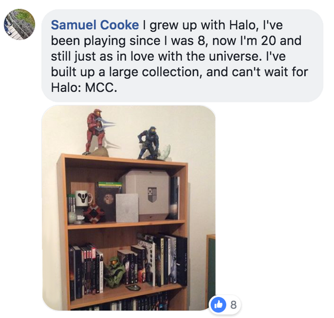
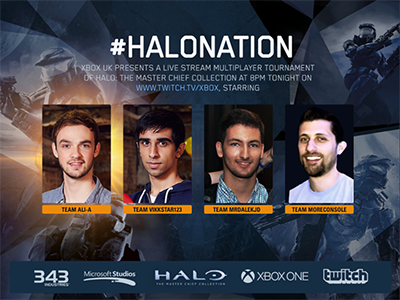
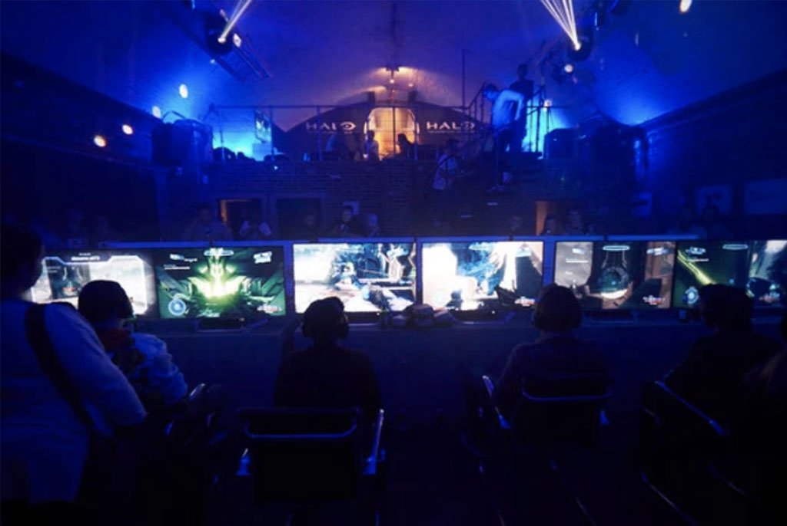